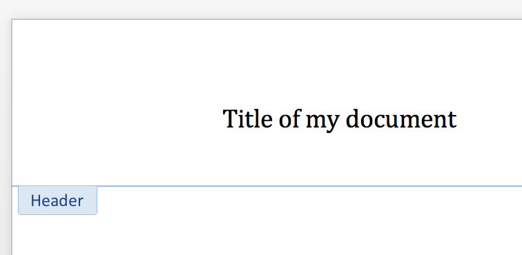
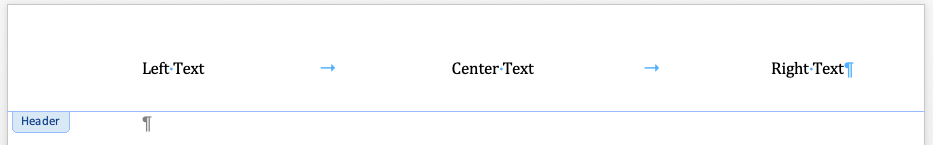

使用页眉和页脚¶
Working with Headers and Footers
Word 支持 页眉 和 页脚。页眉是出现在每页顶部边距区域中的文本，与正文分开，通常传达上下文信息，例如文档标题、作者、创建日期或页码。文档中的页眉在各个页面之间是相同的，只有内容上的细微差异，例如章节标题或页码会发生变化。页眉 (page header ) 也称为 页眉 (running head)。
页脚 在各个方面都类似于页眉，只是它出现在页面的底部。它不应与脚注混淆，因为脚注在各个页面之间并不统一。为简洁起见，术语 header 在此处通常用于指代可能是页眉或页脚对象的内容，相信读者能够理解它对这两种对象类型的适用性。
Word supports page headers and page footers. A page header is text that appears in the top margin area of each page, separated from the main body of text, and usually conveying context information, such as the document title, author, creation date, or the page number. The page headers in a document are the same from page to page, with only small differences in content, such as a changing section title or page number. A page header is also known as a running head.
A page footer is analogous in every way to a page header except that it appears at the bottom of a page. It should not be confused with a footnote, which is not uniform between pages. For brevity's sake, the term header is often used here to refer to what may be either a header or footer object, trusting the reader to understand its applicability to both object types.
访问某个节的页眉¶
Accessing the header for a section
页眉和页脚与一个 节 相关联；这允许每个节都有各自不同的页眉和/或页脚。例如，横向页面的节可能比纵向页面的节有更宽的页眉。
每个节对象都有一个 .header 属性，用于访问该节的 _Header 对象:
>>> document = Document()
>>> section = document.sections[0]
>>> header = section.header
>>> header
<docx.section._Header object at 0x...>
即使某个节没有定义页眉， Section.header 上也 始终 存在一个 _Header 对象。_Header 对象是否包含实际的页眉定义由 _Header.is_linked_to_previous 属性指示:
>>> header.is_linked_to_previous
True
值为 True 表示 _Header 对象不包含页眉定义，并且该节将显示与前一个节相同的页眉。这种“继承”行为是递归的，也就是说，一个“链接”的页眉实际上是从第一个具有页眉定义的前面节获取其定义的 。在 Word 用户界面（UI）中，这种“链接”状态显示为“与上一节相同”。
一个新的文档在其包含的单个节上没有页眉，因此在这种情况下 .is_linked_to_previous 的值为 True。请注意，在这种情况下可能有点违反直觉，因为实际上 没有前一个节的页眉 可供链接。在这种 “没有前一个页眉” 的情况下，不会显示任何页眉 。
Headers and footers are linked to a section; this allows each section to have a distinct header and/or footer. For example, a landscape section might have a wider header than a portrait section.
Each section object has a .header property providing access to a _Header object
for that section:
>>> document = Document()
>>> section = document.sections[0]
>>> header = section.header
>>> header
<docx.section._Header object at 0x...>
A _Header object is always present on Section.header, even when no header is
defined for that section. The presence of an actual header definition is indicated by
_Header.is_linked_to_previous:
>>> header.is_linked_to_previous
True
A value of True indicates the _Header object contains no header definition and the
section will display the same header as the previous section. This "inheritance"
behavior is recursive, such that a "linked" header actually gets its definition from the
first prior section having a header definition. This "linked" state is indicated as
"Same as previous" in the Word UI.
A new document does not have a header (on the single section it contains) and so
.is_linked_to_previous is True in that case. Note this case may be a bit
counterintuitive in that there is no previous section header to link to. In
this "no previous header" case, no header is displayed.
添加页眉（简单情况）¶
Adding a header (simple case)
可以通过编辑 _Header 对象的内容，轻松地为新文档添加页眉。
_Header 对象是一个“故事”容器，其内容的编辑方式与 Document 对象相同。
需要注意的是，与新文档类似，新的页眉默认包含一个（空的）段落:
>>> paragraph = header.paragraphs[0]
>>> paragraph.text = "我的文档标题"

- scale:
50%
另外需要注意，添加内容（甚至仅仅访问 header.paragraphs）的操作，
都会创建一个页眉定义，并改变 .is_linked_to_previous 的状态:
>>> header.is_linked_to_previous
False
A header can be added to a new document simply by editing the content of the _Header
object. A _Header object is a "story" container and its content is edited just like
a Document object. Note that like a new document, a new header already contains
a single (empty) paragraph:
>>> paragraph = header.paragraphs[0]
>>> paragraph.text = "Title of my document"
- scale:
50%
Note also that the act of adding content (or even just accessing header.paragraphs)
added a header definition and changed the state of .is_linked_to_previous:
>>> header.is_linked_to_previous
False
添加“分区”页眉内容¶
Adding "zoned" header content
具有多个“区域”的页眉通常是通过精确放置制表位来实现的。
在 Word 中，实现居中和右对齐“区域”所需的制表位是 Header 和 Footer 样式的一部分。
如果使用的是自定义模板，而不是 python-docx 的默认模板，那么在模板中定义该样式可能是一个合理的选择。
插入的制表符（"\t"）用于分隔左对齐、居中对齐和右对齐的页眉内容:
>>> paragraph = header.paragraphs[0]
>>> paragraph.text = "左侧文本\t居中文本\t右侧文本"
>>> paragraph.style = document.styles["Header"]

- scale:
75%
Header 样式会自动应用于新页眉，因此上面第三行（应用 Header 样式）在本例中并非必需，
但仍然包含在此处，以说明一般情况。
A header with multiple "zones" is often accomplished using carefully placed tab stops.
The required tab-stops for a center and right-aligned "zone" are part of the Header
and Footer styles in Word. If you're using a custom template rather than the
python-docx default, it probably makes sense to define that style in your template.
Inserted tab characters ("\t") are used to separate left, center, and right-aligned
header content:
>>> paragraph = header.paragraphs[0]
>>> paragraph.text = "Left Text\tCenter Text\tRight Text"
>>> paragraph.style = document.styles["Header"]
- scale:
75%
The Header style is automatically applied to a new header, so the third line just
above (applying the Header style) is unnecessary in this case, but included here to
illustrate the general case.
删除页眉¶
Removing a header
可以通过将 .is_linked_to_previous 属性赋值为 True 来移除不需要的页眉:
>>> header.is_linked_to_previous = True
>>> header.is_linked_to_previous
True
当 .is_linked_to_previous 被赋值为 True 时，页眉的内容将被不可逆地删除。
An unwanted header can be removed by assigning True to its
.is_linked_to_previous attribute:
>>> header.is_linked_to_previous = True
>>> header.is_linked_to_previous
True
The content for a header is irreversably deleted when True is assigned to
.is_linked_to_previous.
了解多节文档中的页眉¶
Understanding headers in a multi-section document
“直接开始编辑” 的方法在简单情况下可以很好地工作， 但要理解多节文档中的页眉行为，掌握几个基本概念会很有帮助。 以下是它们的要点：
每个节都可以有自己的页眉定义（但不是必须的）。
2. 缺少页眉定义的节会继承前一个节的页眉。_Header.is_linked_to_previous
属性仅仅反映是否存在页眉定义——如果存在，值为 False；如果不存在，值为 True。
3. 没有页眉定义是默认状态。新文档没有定义页眉，新插入的节也没有。
在这两种情况下，.is_linked_to_previous 的值都为 True。
4. 如果 _Header 对象具有页眉定义，则其内容是自身的内容；如果没有，
其内容就是最近一个具有页眉定义的节的内容。
如果没有任何节定义了页眉，则会在第一个节上添加一个新的页眉定义，
其余所有节都会继承该页眉。此页眉定义的添加发生在第一次访问页眉内容时，
例如引用 header.paragraphs 时。
The "just start editing" approach works fine for the simple case, but to make sense of header behaviors in a multi-section document, a few simple concepts will be helpful. Here they are in a nutshell:
Each section can have its own header definition (but doesn't have to).
A section that lacks a header definition inherits the header of the section before it. The
_Header.is_linked_to_previousproperty simply reflects the presence of a header definition,Falsewhen a definition is present andTruewhen not.Lacking a header definition is the default state. A new document has no defined header and neither does a newly-inserted section.
.is_linked_to_previousreportsTruein both those cases.The content of a
_Headerobject is its own content if it has a header definition. If not, its content is that of the first prior section that does have a header definition. If no sections have a header definition, a new one is added on the first section and all other sections inherit that one. This adding of a header definition happens the first time header content is accessed, perhaps by referencingheader.paragraphs.
添加页眉定义（一般情况）¶
Adding a header definition (general case)
可以通过将 .is_linked_to_previous 属性赋值为 False，为缺少页眉定义的节显式添加一个页眉定义:
>>> header.is_linked_to_previous
True
>>> header.is_linked_to_previous = False
>>> header.is_linked_to_previous
False
新添加的页眉定义包含一个空段落。需要注意的是，保持页眉为空在某些情况下是有用的， 因为这样可以有效地“关闭”该节及其后续节的页眉，直到遇到下一个定义了页眉的节。
如果页眉已经有了页眉定义，再次将 .is_linked_to_previous 赋值为 False 不会产生任何影响。
An explicit header definition can be given to a section that lacks one by assigning False to its .is_linked_to_previous property:
>>> header.is_linked_to_previous
True
>>> header.is_linked_to_previous = False
>>> header.is_linked_to_previous
False
The newly added header definition contains a single empty paragraph. Note that leaving the header this way is occasionally useful as it effectively "turns-off" a header for that section and those after it until the next section with a defined header.
Assigning False to .is_linked_to_previous on a header that already has a header definition does nothing.
自动定位继承的内容¶
Inherited content is automatically located
编辑标题的内容会编辑“源”标题的内容，同时考虑任何“继承”。例如，如果第 2 节标题继承自第 1 节，并且您编辑第 2 节标题，则实际上会更改第 1 节标题的内容。除非您首先明确将“False”分配给其“.is_linked_to_previous”属性，否则不会为第 2 节添加新的标题定义。
Editing the content of a header edits the content of the source header, taking into account any "inheritance". So for example, if the section 2 header inherits from section 1 and you edit the section 2 header, you actually change the contents of the section 1 header. A new header definition is not added for section 2 unless you first explicitly assign False to its .is_linked_to_previous property.